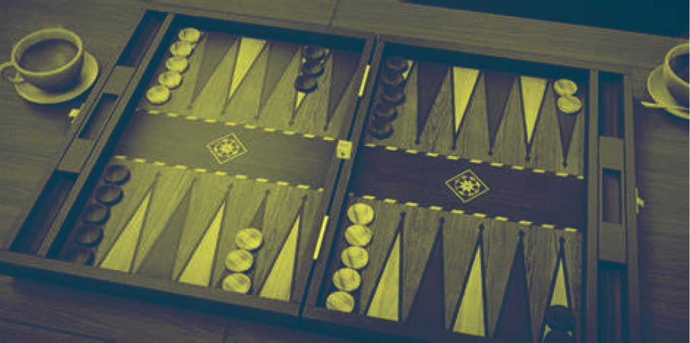
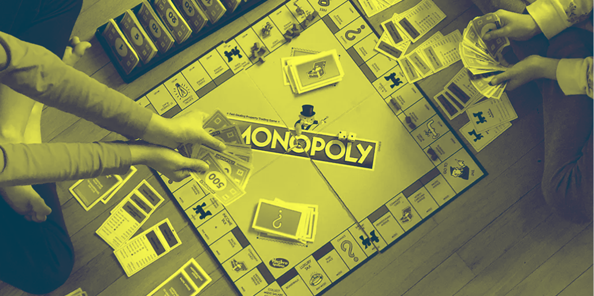
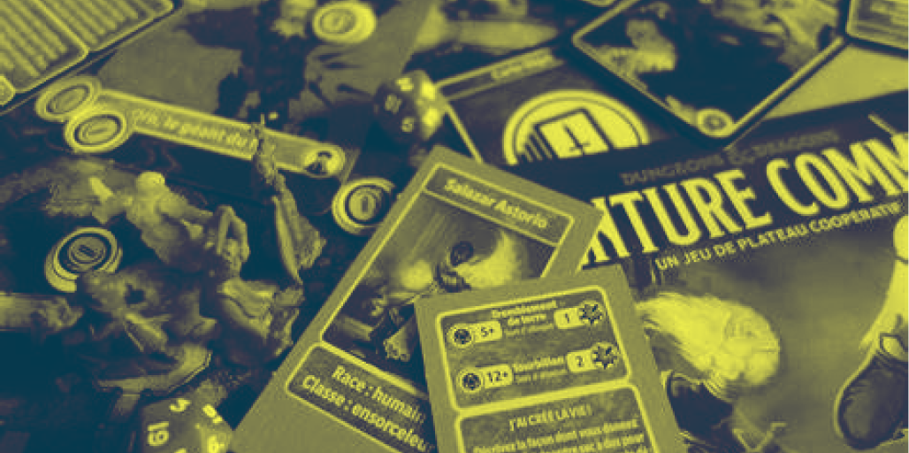

Les jeux de société ont une histoire fascinante qui remonte à des milliers d'années. Leur évolution a été influencée par des facteurs culturels, sociaux et technologiques, transformant des simples divertissements en expériences riches et variées.

Origines anciennnes
Les jeux de société ont émergé dans les civilisations anciennes, avec des exemples notables comme le Senet en Égypte (3100 av. JC) et le jeu de l'Ur en Mésopotamie (2600 av. JC). Ces jeux étaient souvent associés à des rituels et des pratiques sociales, reflétant des croyances culturelles et spirituelles. Le Senet, par exemple, était perçu comme un moyen d'accompagner les âmes dans l'au-delà, tandis que le jeu de l'Ur était utilisé pour le divertissement et l'enseignement stratégique.
- 3000 av. JC
- 1500 ap. JC

Jeu de stratégie et de guerre
Au fil des siècles, les jeux de société ont évolué pour inclure des éléments de stratégie et de guerre. Des jeux comme le Chaturanga en Inde (6e siècle) et le Shogi au Japon (15e siècle) ont introduit des mécaniques de jeu complexes basées sur des batailles. Ces jeux reflétaient les enjeux militaires de leur époque et ont posé les bases des jeux d'échecs modernes.
500-1500
Renaissance et évolution européenne
La Renaissance a vu un renouveau des jeux de société en Europe, avec l'introduction de jeux comme le Backgammon et les premières versions des échecs modernes. Ces jeux étaient souvent associés à l'aristocratie et au divertissement de la cour. L'imprimerie a permis de diffuser des règles de jeux, rendant ces divertissements plus accessibles au grand public.
1500-1700
Industrialisation
Au 19e siècle, avec l'industrialisation, les jeux de société ont commencé à être produits en masse. Des jeux comme le Monopoly et le Loto ont émergé, devenant populaires dans les foyers. Ces jeux reflétaient des thèmes contemporains, tels que le commerce et l'accumulation de richesse, et ont marqué une transition vers des divertissements plus centrés sur la famille.
1800-1899
20ème siècle
Au 20ème siècle, les jeux de société ont évolué de manière significative, marquant une transition vers des expériences de jeu plus stratégiques et immersives. Les jeux de stratégie modernes ont connu leur essor avec des titres comme Risk (1957), qui a introduit des éléments de conquête territoriale, et Donjons & Dragons (1974), qui a initié des millions de joueurs aux jeux de rôle. Ces jeux ont marqué un tournant en permettant aux joueurs d'interagir dans des univers complexes et personnalisés.
1900-1999

Renaissance moderne
Depuis les années 2000, il y a eu un regain d'intérêt pour les jeux de société classiques et modernes. Des jeux comme "Catan", "Carcassonne" et "Pandemic" ont non seulement revitalisé l'industrie, mais ont aussi attiré une nouvelle génération de joueurs. Cette période se caractérise par une explosion de créativité, avec des mécaniques de jeu innovantes et des thèmes variés.
2000-2010
Révolution numérique
À la fin du 20e siècle, l'avènement des technologies numériques a transformé les jeux de société. Des versions électroniques et numériques de jeux traditionnels ont vu le jour, tout en donnant naissance à de nouveaux formats de jeux. Cette révolution a permis une interactivité accrue et a facilité la connexion entre joueurs à distance.
2010-2025
La frise chronologique des jeux de société illustre leur évolution continue, des débuts anciens jusqu'à l'époque moderne. Avec l'essor des jeux immersifs et innovants, tels que "Risk" ou "Catan", les jeux de société se sont transformés tout en restant ancrés dans l'interaction sociale. Aujourd'hui, ils évoluent vers des expériences hybrides, entre le physique et le numérique, garantissant leur pertinence pour le futur.
En découvrir plus :

Les jeux de sociétés
Découvrez l'univers captivant des jeux de société, où stratégie, aventure et convivialité se rencontrent. Explorez leur évolution fascinante, des classiques intemporels aux innovations modernes, et laissez-vous emporter par le plaisir de jouer ensemble.

Les différents types
Découvrez l'univers fascinant des jeux de société, où chaque type offre une expérience ludique unique. Plongez dans un monde riche en stratégies, en interactions et en créativité. Que vous soyez novice ou expert, cet article vous dévoilera la diversité des jeux qui peuvent enrichir vos soirées et renforcer vos liens sociaux.
Les jeux du futur
Découvrez à quoi pourraient ressembler les jeux de société du futur, intégrant innovation et interactivité. Imaginez des expériences immersives utilisant la réalité augmentée et l'intelligence artificielle tout en transformant le divertissement en favorisant les connexions sociales.